Room 03
The Survey Turn
After Plassey the gaze changes hands and character. With Rennell and the surveyors, India stops being chiefly a thing reported and becomes a thing measured — drawn from within the country by chains, instruments and calculated networks in the service of a Company that means to govern. The finished maps present European scientific authority, but the work also depended on extensive Indian labour, local knowledge and subordinate survey establishments. Decoration retreats; the grid advances. To map becomes one means of possession.
 Rennell’s Hindoostan — two-sheet composite1781
Rennell’s Hindoostan — two-sheet composite1781 Hindoostan and the Mogul Empire1788
Hindoostan and the Mogul Empire1788 The Newest Map of Hindostan and Bengal1788
The Newest Map of Hindostan and Bengal1788 Mappa geogr. Indiæ Orients eller geogr. charta öfver Ostindien1789
Mappa geogr. Indiæ Orients eller geogr. charta öfver Ostindien1789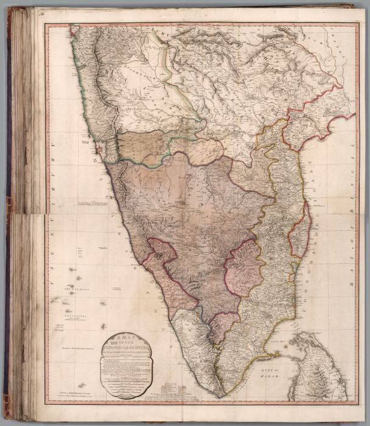
The Peninsula of India to Cape Comorin1792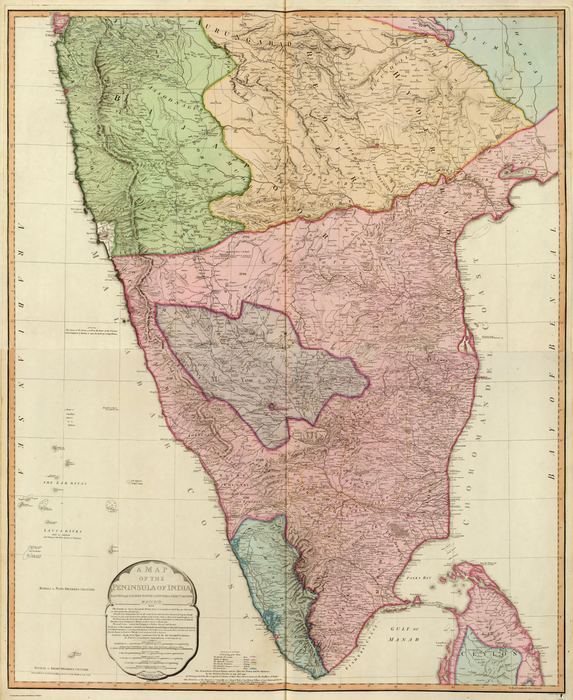
The Indian Peninsula1800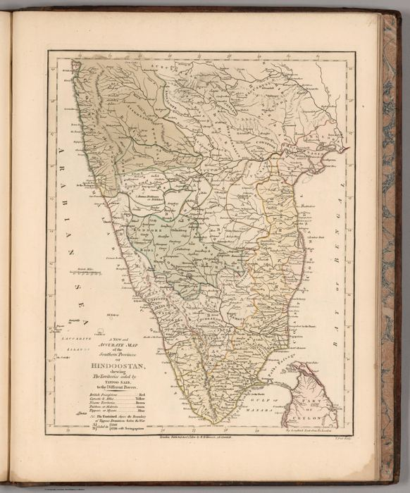
A New and Accurate Map of the Southern Province of Hindoostan1800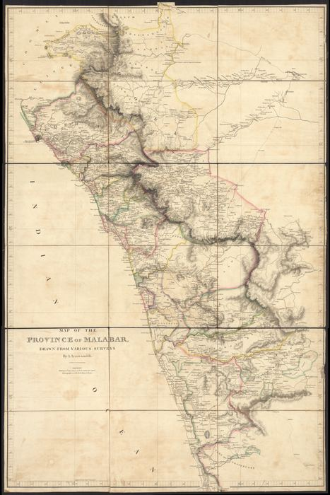
Province of Malabar — three-sheet composite1809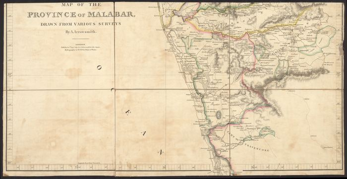
Province of Malabar — Sheet 11809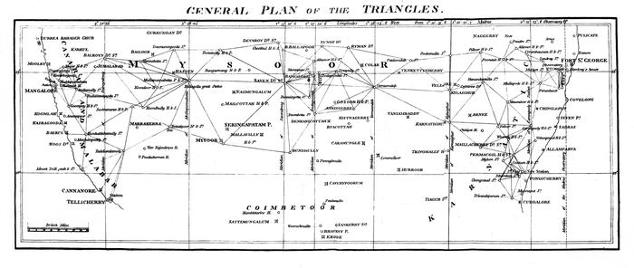
Triangulation across the Indian Peninsula1811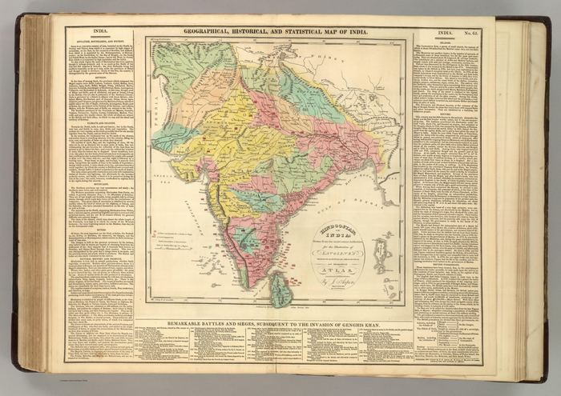
India1820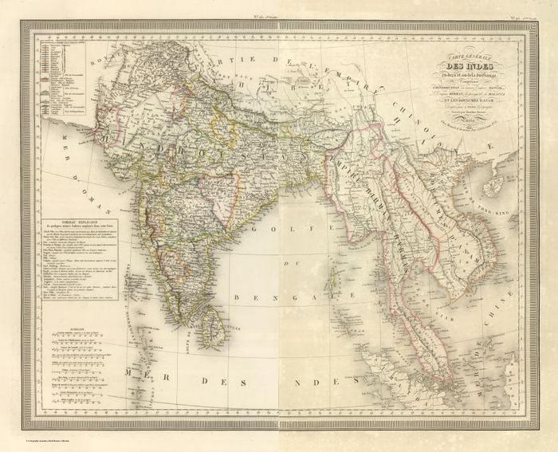
General Map of the Indies1825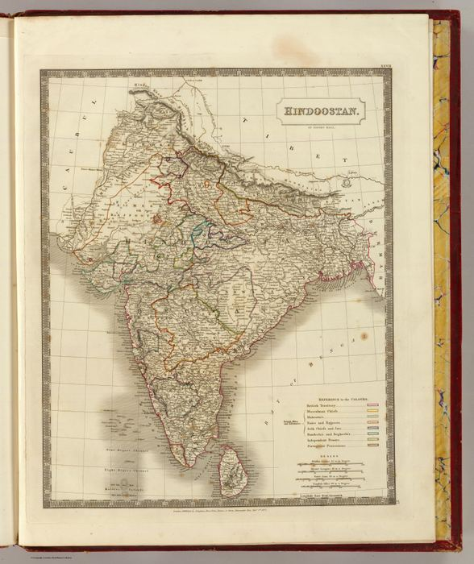
Hindoostan1827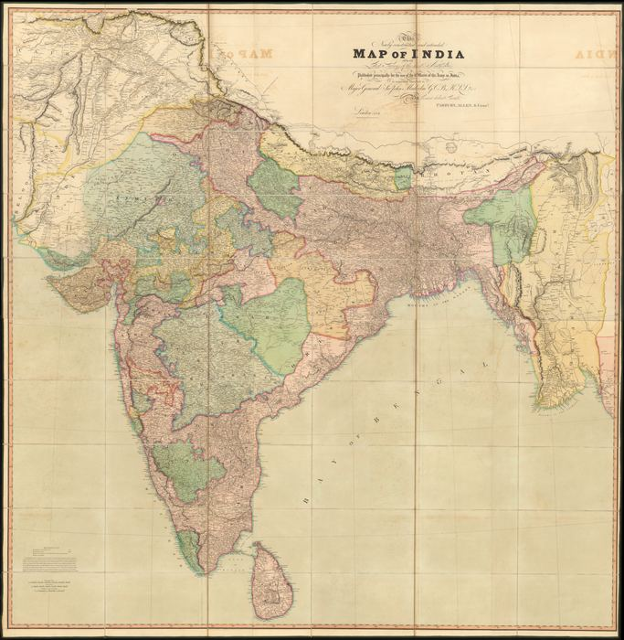
A Newly Constructed Map of India1831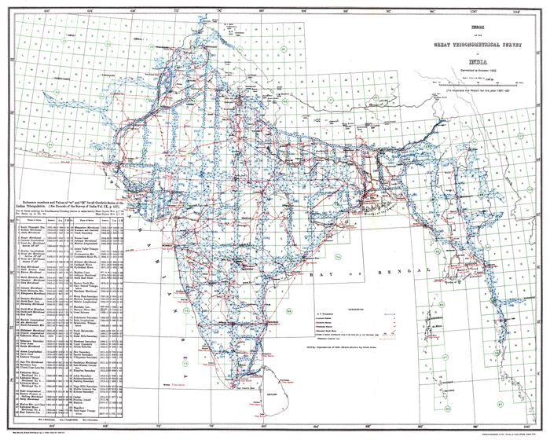
GTS Index1922